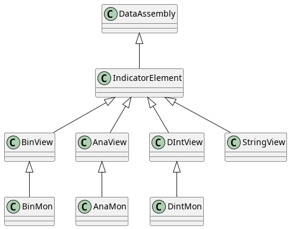
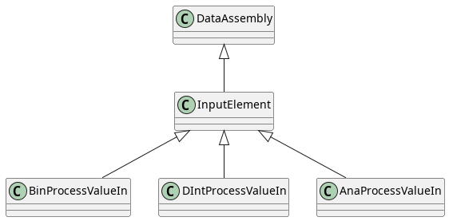
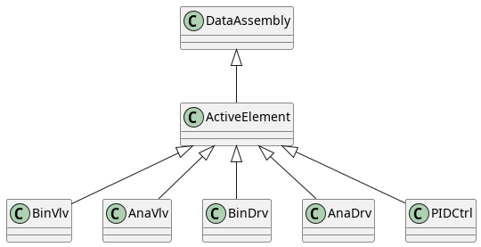

MTP Model Elements
Before we dive into writing a ControlEngine (CE), let’s review the key elements used by the MTP Model Core.
From a Software standpoint, a MTP runtime representation is roughly composed of the following components:
![@startuml
class mtp
mtp o-- "0..n" DataAssembly : "CommunicationSet"
mtp o- "0..n" Service : "ServiceSet"
Service *-- "1..n" Procedure
Service o-- ConfigurationParameter
class ConfigurationParameter
{
dataAssembly : ParameterElement
}
class Procedure
{
list<service state callbacks>
+createProcedureParameter(name, ParameterElement&)
+createProcessValueIn(name, InputElement&)
+createReportValue(name, IndicatorElement&)
+createProcessValueOut(name, IndicatorElement&)
}
Procedure *-- "0..n" ProcedureParameter
Procedure *-- "0..n" ProcessValueIn
Procedure *-- "0..n" ReportValue
Procedure *-- "0..n" ProcessValueOut
class ProcedureParameter
{
dataAssembly : ParameterElement
}
class ProcessValueIn
{
dataAssembly : InputElement
}
class ProcessValueOut
{
dataAssembly : IndicatorElement
}
class ReportValue
{
dataAssembly : IndicatorElement
}
DataAssembly <|-- ActiveElement
DataAssembly <|-- OperationElement
DataAssembly <|-- IndicatorElement
DataAssembly <|-- InputElement
@enduml](../../_images/plantuml-57658a4c86f8e159a1b1d72172967d35886da29e.png)
Figure: MTP object hierarchy and associations of relevance for the CENA. Hint: Open/view the image separately if illegible.
The above diagram is intended to provide an overview, it is neither exhaustive, complete or fully accurate.
An MTP Control Engine will generally manage DataAssemblies and/or implement the “business logic” (Service state callbacks) of Procedures.
This part of the documentation describes concepts behind the major MTP components and provides some guidelines on their use.
Aspects of an MTP
The MTP has several “aspects” - each aspect constitutes a conceptual domain of functionality (e.g. Alarms, Services or HMI). When viewed as part of the CENA, these are roughly “top-level folders” that contain MTP stuff.
We’ll focus only on those of relevance:
The Services aspect contains services, which constitute the state-based-control paradigm underlying the MTP.
The Communications aspect contains server-related infos and more importantly the InstanceList, which is where all MTP DataAssemblies that are not directly integrated into Services end up.
Types and class names in the MTP
Throughout the CENA and the MTP, you will find that type prefixes and abbreviations are used in abundance. For better or for worse, naming in the VDI 2658 draws inspiration from older X86 architectures and the IEC 61131.
Common data type name prefixes
Datatype abbreviations common throughout the MTP are:
Ana…, e.g. in AnaView, denotes that the data structure aims to support floating point values
Bin…, e.g. in BinView, denotes that the data structure aims to support boolean values
DInt…, e.g. in DIntView, denotes that the data structure aims to support discrete integer values
String…, e.g. in StringView, denotes that the data structure aims to support strings of human readable text
Common Usage and ownership indicators
Some variables and data structures will hint at their indented use by suffixing or infixing one of the following:
Op, as in ‘operator’, is an indicator that this variable is intended to be set in an HMI/P&ID through manual interaction of an operator
Aut, as in ‘automatic’, denotes that something handled by POL or PEA without human/operator intervention. Automatic may fall into two categories:
Ext, as in ‘external’, is an indicator that this variable is intended to be set by the POL as part of a recipe. This would be “external” from the PEA standpoint.
Int, as in ‘internal’, denotes variables that the PEA sets on its own.
Note
‘Automatic’ is implied. Many MTP data structures will use variables like Op, Int and Ext - the automatic mode is implied by Int and Ext.
Man, as in ‘manual’, can be encountered in two contexts
If Man is a suffix to a variable, like VMan, it indicates the value is designed be set by a (local) interface/HMI, e.g. a display panel on the unit. Man is not used for variables in SCADA components.
If Man is part of a datastructure, like BinMan, it indicates that the data structure is a setpoint of some kind
Act, as in ‘actual’ or ‘active’, tends to be a boolean output denoting the current state of something, e.g. an operation or source mode
Req, as in ‘request’, is an indicator that a value was chosen (usually from Int, Ext or Op or Man), but is not in effect yet.
Base Functions
As you might be suspecting, things like “operation modes” or “source modes” encountered throughout multiple MTP data structures are defined by the VDI 2568-3; these explicitly state how variables like Man, Act, Op behave and what they do.
Detailing base functions is well beyond the scope of this tutorial. They are handled and adhered to by the model core.
Data Assemblies
The MTP calls every complex data structure that represents data DataAssemblies. All DataAssemblies have a string name and description to explain what they are and do.
To you as a software developer, a DataAssembly is a class with a pre-conceived use case, e.g. setpoints, output values, etc.
DataAssemblies are “grouped” by what they are used for.
IndicatorElements are PEA output variables
InputElements are PEA inputs variables
OperationElements are setpoints
ActiveElements are actuators
ServiceElements are relate to the control or parametrization of services and procedures
DataAssemblies can live stand-alone in the InstanceList, but it is far more common that they are situated in a Service as a parameter.
Indicator Elements
IndicatorElements act as “Output Variables” that can be updated by the PEA as output variables.
In addition to name and description, they will have a VOut as output and some additional type-related stuff.

Input Elements
InputElements are the reverse of IndicatorElements: They allow the POL to simply write a value, at any point in time. They are most commonly encountered in Services to allow a POL to write PEA-external measurement values, e.g. such that are read by an external sensor or provided by a different PEA.

Operation Elements
[Bin|DInt|Ana]Man DataAssemblies are used to provide a SetPoint (VOut) that the POL can influence.
This setpoint-logic is “hidden” by CENA’s high-level API in the following manner:
The current setpoint is acquired using
getCurrentSetpoint()and corresponds to VOutThe new setpoint, as requested by the POL by setting VMan, is set and retrieved using
getUpdatedSetPoint()
[Bin|DInt|Ana]ManInt also provide
requestSetpoint()along with a SourceMode to update VOut either from VMan (POL) or VIntAssignments in code and implicit type conversion is mapped to the Feedback VFbk value.

In addition to the POL-setpoint, there exists the (Bin|Ana|DInt)ManInt dual setpoint type: These have two inputs (VInt and VMan) which can both provide a setpoint for VOut. To control which of the two gets to influence VOut, there is a SourceMode.
Additionally, you should keep in mind that setpoints of integer elements ([Ana|DInt]Man(Int)?) are range-limited. So what the POL requests may not be what it gets:
Value limitation is always applied to the setpoint VOut when updating and requesting values
VRbk reflects the setpoint as requested by the POL (without value limitation)
ParameterElement
ParameterElement can be considered a special kind of (Ana|DInt|Bin|String)ManInt. They also have multiple setpoint input sources, but these are VOp, VExt and VInt.
ParameterElement serve as input parameters for Services and Procedures and act a little different then the other ones.
ParameterElement have a separate “Apply”-Logic for transferring a requested value (‘VReq’) to the actual value (VOut). When a value can be applied and who may apply it is usually defined by the ServiceSheet, i.e. not directly visible in the MTP or its runtime.
Active Elements
These are a bit more elaborate, but simple to explain: An ActiveElement is either a valve, a drive or a controller. These all contain rather elaborate business logic that defines how they behave.

From a software development standpoint, the CENA’s high-level function reduces all of these DataAssemblies to
a set of callbacks that are expected to open(), close(), forward() or reverse() the respective drives and valves.
There are also usually OpenFbk(), CloseFbk() etc. that will be invoked to find out in what state the actual
physical component is in. Some valves and drives provide explicit sensors that allow verifying the position, while
others may only allow determining the current setpoint.
Services & Procedures
Services are state machines that fulfill a process function - e.g. “mix” or “heat”. The state machine that underlies each Service offered by a PEA is provided by the MTP (based on IEC 61512) and is handled by the service class. The POL and the PEA may request a Service to start, stop, restart, pause, hold, abort, etc.
The MTP state model is loosely derived from the IEC 62424 and looks like this in CENA:
![@startuml
state LEVEL5 {
[*] -> UNDEFINED
UNDEFINED -> IDLE : "!offline"
IDLE -> UNDEFINED : "offline"
IDLE -> LEVEL4 : "cmd(START):
LEVEL4 -> RESETTING : "cmd(RESET)"
state LEVEL4 {
[*] -> LEVEL3
state LEVEL3 {
[*] -> LEVEL2
state LEVEL2 {
[*] -> LEVEL2_INITIAL
state LEVEL1 {
[*] -> EXECUTE
EXECUTE --> PAUSING
PAUSING -> PAUSED
PAUSED -> RESUMING
RESUMING -> EXECUTE
EXECUTE -> [*]
}
LEVEL1 --> STARTING : "cmd(RESTART) && isActive(EXECUTING)"
LEVEL2_INITIAL -> STARTING : "cmd(START)"
LEVEL2_INITIAL --> UNHOLDING : "cmd(UNHOLD)"
STARTING -> LEVEL1 : "completed(STARTING)"
UNHOLDING -> LEVEL1 : "completed(UNHOLDING)"
LEVEL1 -> COMPLETING : "!self-completing & cmd(COMPLETE) \n or \n self-completing & completed(EXECUTING))"
COMPLETING -> [*]
}
LEVEL2-->HOLDING : "cmd(HOLD)"
HOLDING->HELD
HELD-->LEVEL2 : "cmd(UNHOLD)"
}
LEVEL3 --> STOPPING
STOPPING -> STOPPED
STOPPED -> [*]
}
LEVEL4 --> ABORTING
LEVEL4 -> COMPLETED
ABORTING -> ABORTED
ABORTED -> RESETTING
COMPLETED --> RESETTING : "cmd(RESET) && completed(COMPLETING)"
RESETTING -> IDLE
}
@enduml](../../_images/plantuml-334b2bdcce47552a5cde4dcb5fd5982d3649191f.png)
Figure: MTP States and Transitions for state-based control (as per `Service.cpp`).
Note
Note that some extra states have been inserted in the CENA to account for requirements of formally modelled UML state machines. These extra states will not be visible or accessible in any way at runtime, they are purely internal.
What is done inside each state is described by a ServiceProcedure - a Service may contain more than one Procedure, e.g. as different ways to “mix” (“mixAndHeat”, “mixSlowly”, “mixHeftily”, etc.).
The API provides all management and update functionality for Services and Procedures. The userland code only needs to add and use Service and/or Procedure parameters and provide callbacks for each Procedures state.
Service Parameters
A Service may have ConfigurationParameters, which essentially create an alias to a ParameterElement-derived DataAssembly. The underlying [Bin|DInt|Ana|String]ServParam classes are derived from OperationElements and describe a setpoint of some sort.
ParameterElements, in contrast to other OperationElements, have no VRbk - the VReq variable reflects the latest effectively valid requested setpoint (with applied limits if applicable) that will update VOut.
ParameterElements setpoints VOut are updated by the Service when applied using the ApplyBaseFunction.
Create a ParameterElements derived class outside of the MTP and register it as a ConfigurationParameter by using service.createServiceConfigurationParameter().
From this point on, the POL and Service are going to update setpoints when and as appropriate. The ServParam can be implicitly used as a “normal” variable, which will update the VFbk field (Feedback of real current variable for POL). You may request setpoints on behalf of the PEA, but the update strategy depends on the source/operationmode settings.
Procedure Parameters
Procedures Parameters are one of the following:
ProcedureParameters, which function exactly like service configuration parameters. Note that the MTP model core only permits updating procedures parameters if the procedure is active or was selected in IDLE.
ProcessValueIns, which are ServInParams, a simple input variable writable by the POL at any point in time
ProcessValueOut, which are simple IndicatorElements and can be updated as required
ReportValues, which are simple IndicatorElements and can be updated as required
ProcedureParameters are exactly the same underlying setpoint-type classes as ServiceParameters, they are just updated at a different point in a Services state machine.
Summary
This article has presented you with the nitty-gritty fundamental classes that make up CENAs MTP Model Core.
To see how to create a realistic, usable Control Engine, you should read The Control Engine Example.